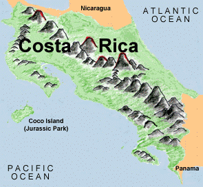

[this page is a mirror of this original].
The Breeze
So, where's the best place for an ex-pat to hang her hat? If it's not the number one place, Costa Rica has to be pretty damned close. It's beautiful, it's tropical, it's lush... and very friendly to people who want to come live there. The volcanoes, the amazing flora and fauna of the rainforest, the beaches, and the gentle climate make Costa Rica a great vacation destination. The laid back immigration policy (U.S. citizens don't even need a passport to get in), the cheap emigration policy (if you spend 600 USD a month--any way you please--you can stay as a permanent resident), the large international and English-speaking populations, and the well-educated people (Costa Rica boasts a higher literacy rate than the United States) make it a great "Get Out Of Dodge" destination.
There are other advantages:
Laissez Faire City is there in force, and is a good source of freedom-oriented fun and companionship--possibly even employment, if you have the right skills.
A libertarian has been elected to Costa Rica's legislature and has a project going to make a freedom enclave out of the whole province of Limon. They don't have a Web site yet, but there's a book relating to the project due out any day now, and the people involve report promising developments.
Costa Rica has no standing army, a condition that has led to a uniquely stable political and business environment, making the country cleaner, safer, and friendlier than almost any other south, central, or north American country.
Costa Rica is updating its information infrastructure and wants to become a hotbed of e-commerce. They are also courting many high-tech companies (Intel is now the largest contributor to the country's tax base), creating a good labor market for people with skills and experience in high-tech fields.
Costa Rica is gun-friendly, more so than the United States. (Saved the best for last!) Shooting someone can get you into trouble, of course, but that's better than being a victim, and self-defense and defense of your property are recognized as rightful. There are plenty of gun shops (with more Russian surplus than you find in the typical US gun shop) and no permits or waiting periods required. Like in the US, shooting a burglar in your house is safer than shooting a mugger in the street. Unlike in America, there is no political movement sweeping the country, trying to outlaw tools for self-defense.
Here are some black linings on this silver cloud:
The Costa Rican government is on pretty friendly terms with the US government, and extradition is prompt. For example, if some US jack-booted thugs didn't like what you were doing and made up a story that enabled the DEA or CIA to go after you, the Costa Rican government wouldn't hesitate to help them.
While you could legally take your guns with you, you'd have to surrender them to the authorities for some weeks while they made all kinds of measurements and such. I'm not sure that there's an import tax, but most kinds of paperwork come with a price tag in Latin America. There might be some unusual weapons that they'd give you a hard time over. I heard of a guy who walked right through customs in the San Juan Airport with a semi-auto handgun in his briefcase--he wasn't even stopped, but given how easy it is to buy guns in Costa Rica, replacing hardware would probably be the simplest and lowest profile way to go.
If you want to stay in Costa Rica legally, the government there will be keeping tabs on you. Its pretty non-intrusive, but true nonetheless: they want to make sure you're spending your $600 (or more).
Even though there are many English-speaking people in Costa Rica, the primary language is Spanish, and one should never underestimate the importance of culture shock. Going to live anywhere in Latin America, even a relatively clean and friendly place like Costa Rica, will take a lot of getting used to.
Away from the capital area of San Jose, the roads are bad to non-existent--it takes a long time to get around.
The monkeys swinging through the trees can be kinda cool, but it is a rain forest we're talking about, so it's going to be hot and humid pretty frequently. Still, in the elevations around San Jose, it can be very pleasant, even in the hotter months.
Access is not so easy for families with kids: children must have a current passport to enter. (They claim it's to combat international kidnapping.)
So, how do you get a visa to go to Costa Rica? Pretty easy; you ask the airline for a tourist card and pay $2. If you want to get one of the "pensionado" (retiree) visas, you'll have to fill out more paperwork and provide the authorities with photos and other documentation, but it's pretty straightforward. Remember: the Costa Rican government likes folks to come and live there, so they'll help as much as they can.
It's also worth noting that the Costa Rican government hasn't shown much interest in tracking down people who don't get permanent visas, but never leave. When I was last there, I met a man who'd been in the country illegally for the better part of a decade and made no attempt to hide himself. When he needed to travel abroad, he had to pay a fine, but it was only a couple hundred dollars. The whole government is pretty laid back, in general. People who live in Costa Rica and don't try to go on the dole or look for trouble are usually left alone.
Costa Rica is definitely a hot pick for a place to go to get away from it all, especially for folks who are tired of the US government’s ever-increasing Wars Against Rights.
(c) 2000
